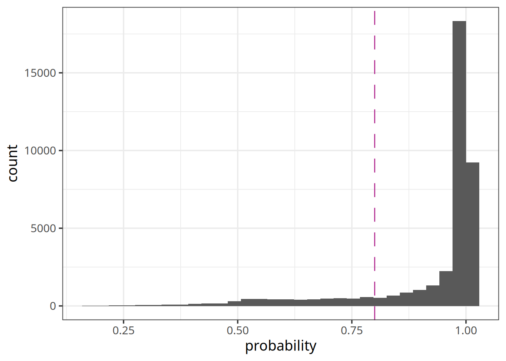
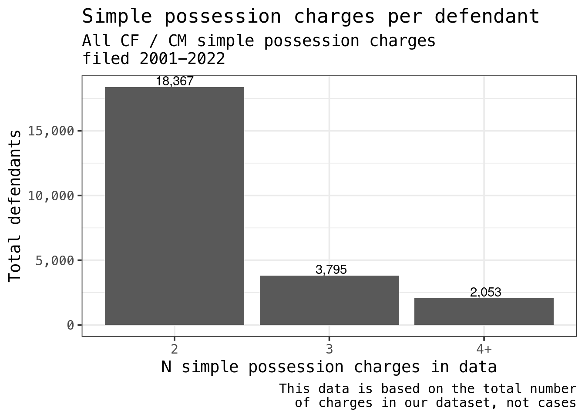
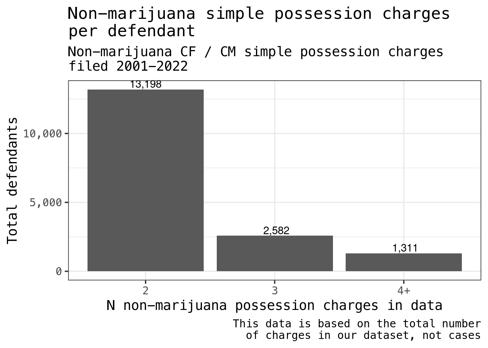

data <- ojo_tbl("case", .con = ojodb) |>
filter(
case_type %in% c("CM", "CF"),
date_filed >= "2001-01-01",
date_filed < "2023-01-01"
) |>
left_join(
ojo_tbl("count", .con = ojodb),
by = c("id" = "case_id"),
suffix = c("", "_count")
) |>
ojo_collect()Executive Summary
Open Justice Oklahoma estimates that between 12,968 and 16,037 Oklahomans benefitted from reduced fines and fees associated with HB 3205 for Q2 and Q3 of FY 2023.
1 Introduction
Oklahoma’s 2023 legislative session saw the introduction of SB 108. This bill, rolling back provisions of State Question 780, would make possession of a controlled substance (excluding marijuana) a felony crime after the fourth such conviction in ten years. While the punishment for a misdemeanor possession conviction is up to $1,000 dollars and/or up to one year confinement, a felony conviction for the same crime can result in a fine of up to $5,000 dollars and/or up to 5 years imprisonment.
This analysis uses historical data on convictions for possession of a controlled substance to better understand how prevalent the situation of having four or more convictions within 10 years is, and thereby, estimate the number of people who would be impacted by this legislation should it be enacted into law in a future legislative session.
2 Data
2.1 Source
Open Justice Oklahoma maintains a database of administrative court records which includes information on all criminal misdemeanors and felonies filed in Oklahoma beginning in 2001. Case information is systematically collected from publicly available data hosted on the Oklahoma State Court Network (OSCN) website.
- Initial data pull: All CF / CM cases filed Jan 1 2001 - Dec 31, 2022, statewide
Our initial data pull has 2,460,554 rows. Since only the 13 official OSCN counties report the charges in each case, we are limited to just those for this analysis of drug possession charges. 1,440,253 of the rows were from these counties, and 1,438,749 had non-missing values for count_as_filed.
- Full list of OSCN counties: Tulsa, Oklahoma, Cleveland, Rogers, Payne, Comanche, Garfield, Canadian, Logan, Adair, Pushmataha, Roger Mills, Ellis
In the data, there were 740,744 unique cases filed in OSCN counties, compared to 1,761,045 cases filed statewide. In other words, 42.06% of the cases were filed in the 13 OSCN counties. Accordingly, we can approximate what the statewide results might look like by assuming our end result accounts for roughly 42% of the total population affected by SB108.
- Data availability, per county:
| District | N Rows | N with Nonmissing Charge | Percent Missing Charge |
|---|---|---|---|
| TULSA | 503,027 | 502,948 | 0.02% |
| OKLAHOMA | 486,993 | 486,751 | 0.05% |
| CLEVELAND | 124,083 | 124,074 | 0.01% |
| ROGERS | 78,098 | 78,072 | 0.03% |
| PAYNE | 61,604 | 60,560 | 1.69% |
| COMANCHE | 47,052 | 47,012 | 0.09% |
| GARFIELD | 38,612 | 38,607 | 0.01% |
| CANADIAN | 37,579 | 37,568 | 0.03% |
| LOGAN | 25,094 | 25,087 | 0.03% |
| ADAIR | 18,518 | 18,490 | 0.15% |
| PUSHMATAHA | 14,420 | 14,419 | 0.01% |
| ROGER MILLS | 2,942 | 2,930 | 0.41% |
| ELLIS | 2,231 | 2,231 | 0% |
- Data availability, per filing year
| Year | N Rows | N with Nonmissing Charge | Percent Missing Charge |
|---|---|---|---|
| 2001-2003 | 171,592 | 170,865 | 0.42% |
| 2004-2006 | 179,679 | 179,363 | 0.18% |
| 2007-2009 | 184,855 | 184,793 | 0.03% |
| 2010-2012 | 184,765 | 184,682 | 0.04% |
| 2013-2015 | 234,559 | 234,476 | 0.04% |
| 2016-2018 | 227,896 | 227,819 | 0.03% |
| 2019-2021 | 195,667 | 195,554 | 0.06% |
| 2022-2024 | 61,240 | 61,197 | 0.07% |
2.2 Methodology
This analysis looks across all 13 counties which report data on charges filed, and across all complete years of misdemeanor and felony data for charges of possession of a controlled substance. We then use a text classification tool to assist with finding all the simple drug possession charges in the data, which allows us to finally report the number of convictions on such charges per defendant.
Our figures are likely to underestimate the total number of convictions by a relatively small, but still methodologically significant amount due to the expungement of records over time. The magnitude of this bias will be greater for earlier years, but can be roughly quantified by exploiting the court case id schema mandated by the Oklahoma Supreme Court.
2.3 Cleaning / classifying count data
The UCCS tool provides estimates of the probability that each classification was correct. We use regex pattern matching to further examine all classifications with a confidence of less than 80%.

The 20 most common verbatim count descriptions – looking only at charges that were included – are shown below:
| count_as_disposed | n |
|---|---|
| UNLAWFUL POSSESSION OF CONTROLLED DRUG | 12318 |
| POSSESSION OF CONTROLLED DANGEROUS SUBSTANCE | 10312 |
| POSSESSION OF CONTROLLED DRUG | 10268 |
| UNLAWFUL POSSESSION OF CONTROLLED DRUG METHAMPHETAMINE | 4874 |
| POSSESSION OF CONTROLLED SUBSTANCE | 4566 |
| POSSESSION OF A CDS METHAMPHETAMINE | 4541 |
| POSSESSION OF A CONTROLLED DANGEROUS SUBSTANCE METH | 4160 |
| POSSESSION OF MARIJUANA | 4006 |
| MARIJUANA MISDEMEANOR | 3853 |
| POSSESSION OF A CONTROLLED DANGEROUS SUBSTANCE MARIJUANA | 3086 |
| POSSESSION OF A CDS MARIJUANA | 2718 |
| UNLAWFUL POSSESSION OF MARIJUANA | 2567 |
| POSSESSION OF A CONTROLLED DANGEROUS SUBSTANCE MARIJUANA SCHD I | 2516 |
| POSSESSION OF A CONTROLLED DANGEROUS SUBSTANCE METH SCHD II | 2064 |
| POSSESSION OF A CDS SCHD II | 2058 |
| POSS OF CDS | 2029 |
| UNLAWFUL POSSESSION OF A CONTROLLED DANGEROUS SUBSTANCE | 1928 |
| CONTROLLED DRUG SCHEDULE II FELONY | 1534 |
| POSSESSION OF A CONTROLLED DANGEROUS SUBSTANCE | 1292 |
| POSSESSION OF A CONTROLLED DANGEROUS SUBSTANCE SCHED II | 1230 |
The 20 most common verbatim count descriptions – looking only at charges that were excluded – are shown below:
| count_as_disposed | n |
|---|---|
| DUI ALCOHOL | 29961 |
| POSSESSION OF DRUG PARAPHERNALIA | 24833 |
| DRIVING UNDER SUSPENSION DUS | 24195 |
| UNLAWFUL POSSESSION OF DRUG PARAPHERNALIA | 21474 |
| OBSTRUCTING AN OFFICER | 19190 |
| PUBLIC INTOXICATION | 19048 |
| BURGLARY SECOND DEGREE | 17865 |
| LARCENY OF MERCHANDISE FROM RETAILER | 17307 |
| DRIVING WHILE UNDER THE INFLUENCE | 17203 |
| ASSAULT AND BATTERY DOMESTIC | 17038 |
| VIOLATION OF COMPULSORY EDUCATION ACT | 15400 |
| BOGUS CHECK | 15020 |
| VIOLATION OF PROTECTIVE ORDER | 13403 |
| POSSESSION OF PARAPHERNALIA | 12465 |
| FAILURE TO CARRY INSURANCE SECURITY VERIFICATION FORM | 11183 |
| CONCEALING STOLEN PROPERTY | 10637 |
| UNAUTHORIZED USE OF VEHICLE | 9370 |
| DRIVING UNDER THE INFLUENCE OF ALCOHOL | 8544 |
| RESISTING AN OFFICER | 8510 |
| DRIVING WITHOUT A DRIVER S LICENSE | 8492 |
Finally, we add the defendant info onto each case so we can see how many have 4+ simple possession charges.
Of the 152,557 total rows / charges in the data, 148,127 have an associated person record (97.1%).
3 Results
3.1 How many simple possession charges per defendant?
To begin, we’ll remove charges that have yet to be disposed (disposition is NA or something aside from “DISMISSED”, “DEFERRED”, or “CONVICTED”), then count how many each individual defendant has in the data.

3.2 How many non-marijuana simple possession charges per defendant?
Next, we’ll repeat this same analysis with marijuana-specific charges removed, as they would be excluded from SB108:

3.3 How many defendants have 4+ non-marijuana simple possession charges in a ten-year timespan?
Finally, SB108 stipulates that the felony charge only comes into effect after 3+ simple possession convictions in a ten year time-span. Therefore, we’ll filter out charges that ended in a dismissal (leaving only convictions and deferred / suspended dispositions) and repeat the analysis with an added 10-year rolling time-frame.
# A tibble: 723 × 2
count_as_disposed charge_desc
<chr> <chr>
1 UNLAWFUL POSSESSION OF CONTROLLED DRUG Possession…
2 POSSESSION OF A CDS COCAINE BASE SCHED II Possession…
3 POSSESSION OF A CDS COCAINE SCHED II Possession…
4 POSSESSION OF A CDS SCHD II Possession…
5 POSSESSION OF CONTROLLED DANGEROUS SUBSTANCE Distributi…
6 POSSESSION OF CONTROLLED DANGEROUS SUBSTANCE WITHOUT A PRESCRIPT… Possession…
7 UNLAWFUL POSSESSION OF CONTROLLED DRUG SECOND AND SUBSEQUENT Possession…
8 POSSESSION OF A PRECURSOR SUBSTANCE WITH OUT PERMIT ATTACHED Distributi…
9 POSSESSION OF CONTROLLED SUBSTANCE Possession…
10 POSSESS PRECURSOR SUBSTANCE Distributi…
# ℹ 713 more rows# A tibble: 1 × 1
n
<int>
1 1239ProsperOK Quarterly Reporting - DRAFT - SB 108 Prospective Impact Analysis ProsperOK Quarterly Reporting - DRAFT - SB 108 Prospective Impact Analysis ProsperOK Quarterly Reporting - DRAFT - SB 108 Prospective Impact Analysis ProsperOK Quarterly Reporting Estimating the number of Oklahomans directly impacted by HB 3205, a reform of juvenile court fees. Analysis conducted at the request of Oklahomans for Criminal Justice Reform (OCJR) and ProsperOK. Estimating the number of Oklahomans directly impacted by HB 3205, a reform of juvenile court fees. Analysis conducted at the request of Oklahomans for Criminal Justice Reform (OCJR) and ProsperOK.